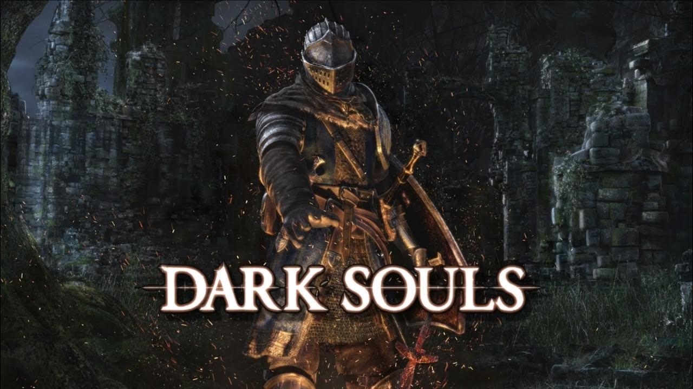
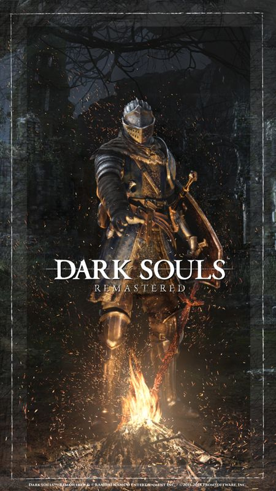

Conheça Dark Souls!


Gênero: Aventura e Rpg em Ação
Plataformas: PC, PS4/5, Xbox One/Series X|S
Como funciona:

Dark Souls continua sendo um dos jogos mais punitivos multiplayer mais influentes da década. Em 2012, ele recebeu uma atualização especial para o evento de Halloween chamada Assombrados até a Aurora, que trouxe uma nova camada de profundidade e terror à jogabilidade. O jogo mantém sua estrutura clássica: quatro sobreviventes tentam escapar de um assassino, enquanto este os caça em mapas sombrios e cheios de obstáculos. A novidade do evento é a introdução do Reino do Vácuo, uma dimensão paralela que aparece durante as partidas e altera completamente a dinâmica do jogo. Quando um jogador entra nesse reino, ele deixa de emitir rastros e o assassino perde seu raio de terror, tornando os encontros mais imprevisíveis e assustadores. Sobreviventes podem coletar cristais do vácuo para criar bombas de fumaça ou reparar geradores à distância, enquanto os assassinos ganham habilidades de ataque à distância chamadas Assombrações Capturadas. Além disso, o evento trouxe cosméticos temáticos, recompensas diárias e uma ambientação ainda mais sombria, com visuais inspirados em rituais ocultos e criaturas espectrais. A experiência é intensa, estratégica e cheia de momentos de tensão, consolidando Dead by Daylight como um dos pilares do terror competitivo.
O grande destaque do evento é o retorno do Reino do Vácuo, uma dimensão paralela criada pela Entidade, repleta das cascas descartadas daqueles que perderam suas emoções. Esse reino sombrio se funde à Névoa e afeta diretamente a jogabilidade. No início de cada partida, um portal para o Reino do Vácuo se abre para todos os jogadores, e diversas Fendas do Vácuo surgem pelo mapa. Essas fendas podem ser ativadas com Energia do Vácuo, uma substância misteriosa que os jogadores coletam ao cumprir tarefas específicas durante a partida.
Dentro do Reino do Vácuo, os sobreviventes não deixam rastros, dificultando a perseguição por parte dos assassinos. Por outro lado, os assassinos perdem seu raio de terror, tornando-se ainda mais imprevisíveis. A Energia do Vácuo pode ser usada para criar itens poderosos que mudam o rumo da partida. Os sobreviventes têm acesso ao Cristal do Vácuo, um item exclusivo com duas funções: a Bomba de Fumaça, que atrapalha a visão do assassino e facilita a fuga, e o Reparo de Gerador Remoto, que permite reparar um gerador à distância, desde que ele não esteja sendo usado.
Os assassinos, por sua vez, podem criar a Assombração Capturada, um ataque de projétil que fere sobreviventes em linha reta. Além disso, esse item concede um bônus passivo à velocidade de quebra de objetos, tornando o assassino mais eficiente mesmo sem usar o ataque diretamente.
O evento também traz de volta as Abóboras do Vácuo, espalhadas pelo mapa. Ao pisar nelas, o jogador pode receber uma recompensa ou uma penalidade, como aumento ou redução de velocidade. É uma brincadeira típica de Halloween que adiciona um toque de imprevisibilidade à partida.
No aspecto visual e cosmético, Assombrados até a Aurora oferece uma série de recompensas exclusivas. Há trajes temáticos para personagens como Felix Richter e a Negociante de Crânios, além de camisas de esqueleto para Dwight Fairfield, Vee Boonyasak e Zarina Kassir. Armas de doces também fazem parte da festa, como a Lâmina Larb Pegajosa da Krasue, a Centopeia Cristalizada do Oni e o Caramelo Afiado do Trapaça, que adicionam um toque divertido e assustador ao combate.
Os jogadores podem acumular Bugigangas Sombrias, a moeda exclusiva do evento, ao completar desafios e missões. Essas bugigangas podem ser trocadas por cosméticos, amuletos, insígnias e banners temáticos. Há também recompensas diárias para quem fizer login entre 14 de outubro e 4 de novembro, incluindo Pontos de Sangue, Fragmentos Iridescentes e Bugigangas Sombrias. Quem participar todos os dias pode acumular até 850.000 Pontos de Sangue e 1.000 Fragmentos Iridescentes.
Por fim, o evento traz a Coleção Gostosuras e Travessuras, que revela um pouco da personalidade dos personagens através das fantasias que escolhem usar. Entre os destaques estão o traje de Múmia de Papel Higiênico de Dwight e os trajes góticos dos irmãos Lyra, como o Halloween Amigável de Thalita e o Morcego de Praia de Renato, disponíveis por tempo limitado na loja do jogo.
Assombrados até a Aurora 2025 é mais do que um evento: é uma imersão completa no universo sombrio de Dead by Daylight, com novas mecânicas, visuais arrepiantes e uma celebração que transforma cada partida em uma experiência única e aterrorizante.
Um ciclo sem fim
- Build complexas para escolher na sua jornada
- Jogabilidade Complicada e bem punitivo
- O ciclo sempre se recomeça após acender a chama primordial
Conheça outros jogos!